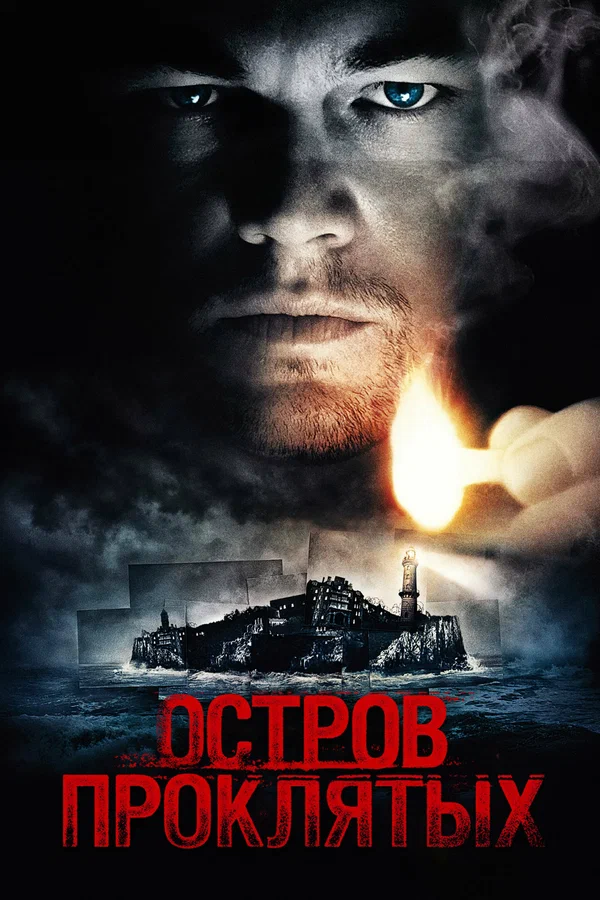
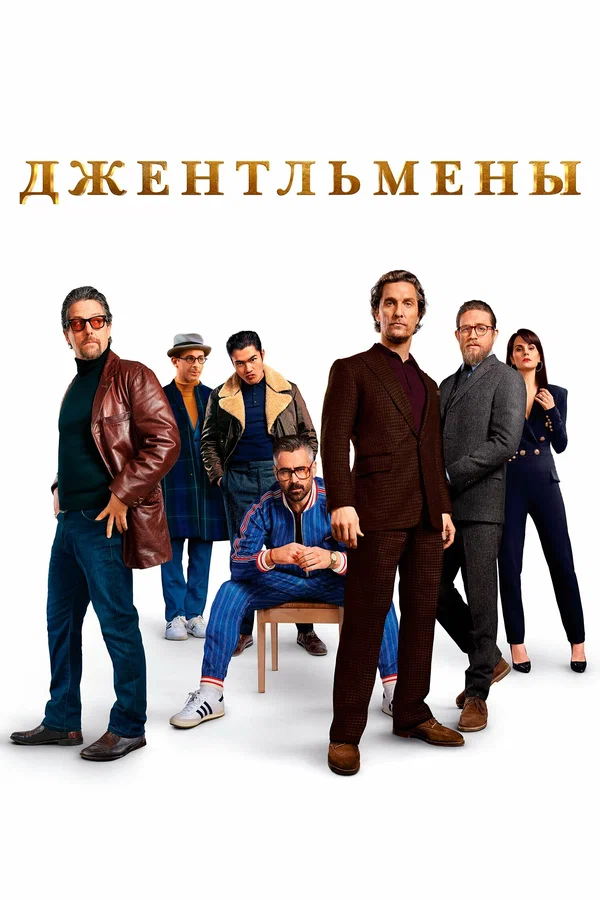
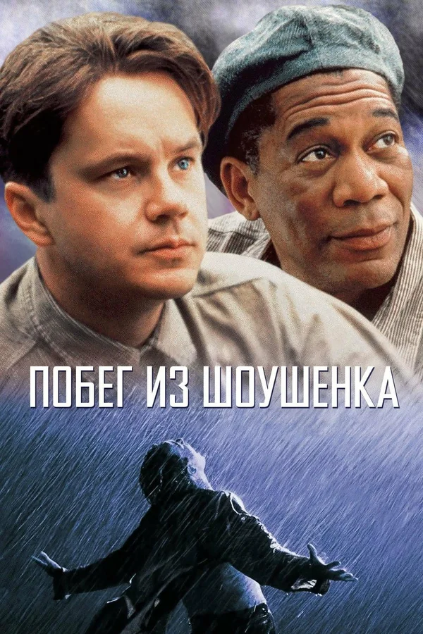
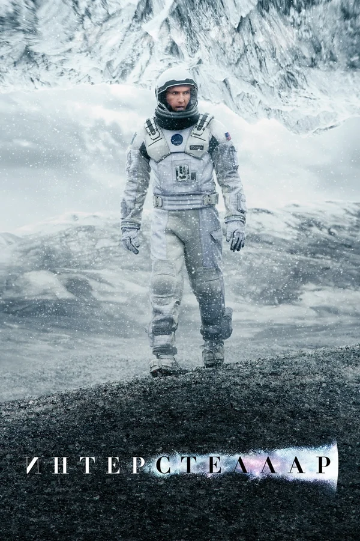
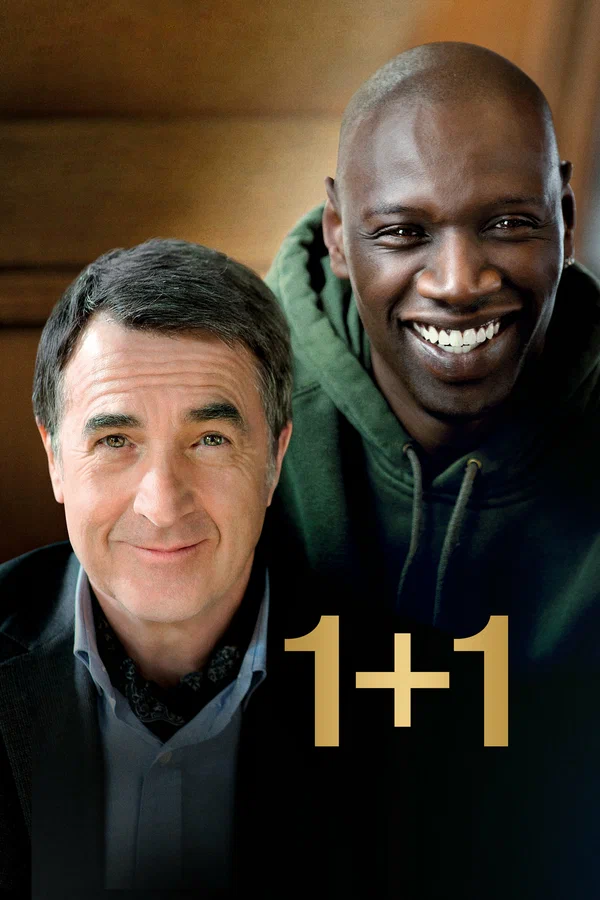
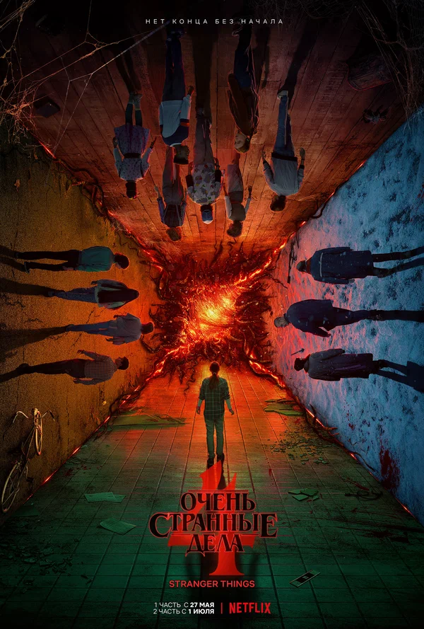
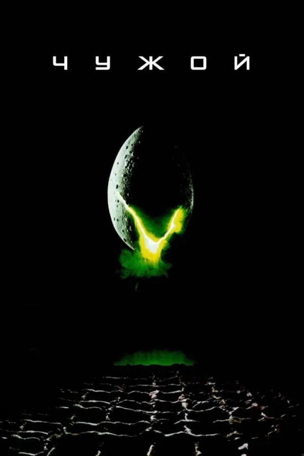
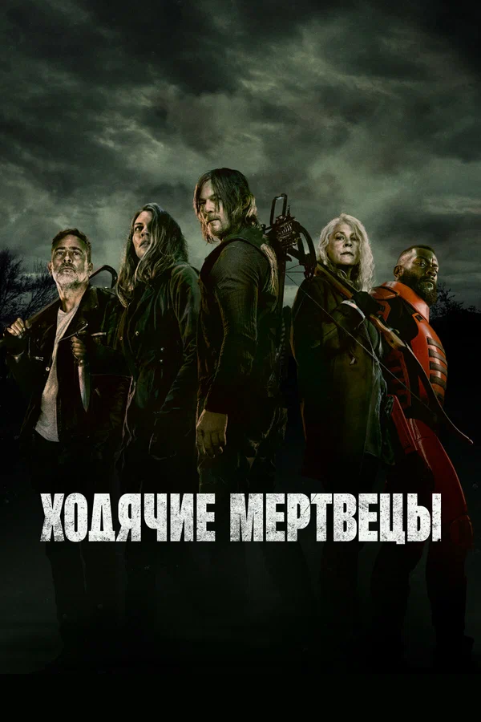

Кинопоиск считается одним из самых уважаемых сервисов связанных с кинематографом, разработанный в 2018 году. Самым большим преимуществом данного сервиса считается его свободно редактируемая база данных. Это значит, что пользователи сами ставят оценку фильмам, и из-за большой аудитории можно получить наиболее объективное мнение.

Два американских судебных пристава отправляются на остров в штате Массачусетс, чтобы расследовать исчезновение пациентки клиники для умалишённых преступников.
Оценка: 8.4
Режиссёр: Мартин Скорсезе

Ушлый американец придумал схему нелегального обогащения, используя поместья английской аристократии. Журналист пытается продать историю о преступлениях главного героя.
Оценка: 8.6
Режиссёр: Гай Ричи

Энди Дюфрейн, обвинённый в убийстве жены, пытается выжить в тюрьме Шоушенк, где царят жестокость и беззаконие.
Оценка: 9.1
Режиссёр: Фрэнк Дарабонт

Команда исследователей отправляется через червоточину, чтобы найти новую пригодную для жизни планету.
Оценка: 8.7
Режиссёр: Кристофер Нолан

Богатый аристократ Филипп после несчастного случая нанимает себе в помощники Дрисса, что меняет жизнь обоих.
Оценка: 8.9
Режиссёры: Эрик Толедано, Оливье Накаш

В городе Хоукинс пропадает подросток Уилл, и вскоре его друзья обнаруживают вмешательство потусторонних сил.
Оценка: 8.4
Режиссёры: Мэтт Даффер, Росс Даффер, Шон Леви

Экипаж космического корабля получает неизвестный сигнал и оказывается втянут в смертельно опасное столкновение с инопланетной формой жизни.
Оценка: 8.1
Режиссёр: Ридли Скотт

После зомби-апокалипсиса шериф Рик Граймс ведёт группу выживших в поисках безопасного места.
Оценка: 8.0
Режиссёр: Грег Никотеро